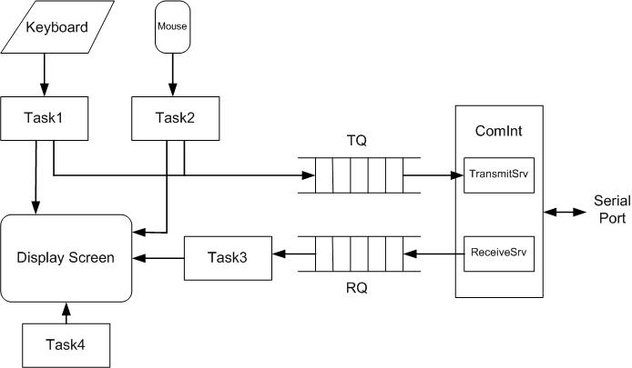

Computer
Engineering II
Machine Problem
5
| Schedule | Lab schedule |
| Homework | Lab Manual |
| Machine Problems | Resources |
| Final Project | Photos |
| Gradebook | Feedback |
| Syllabus | Archives |
| Lectures | Download NASM |
| Home | Restricted access |
|
|
| ||||||||||||||||
Machine Problem 5: Connect Four via Serial Port
Now all of the communications plugs the physical link, the RS232 connector, is the simplest. I think it was discovered in the ruins at Pompeii -- the Romans probably used it to interface with their data runners. It specifies voltages (plus and minus) which are prehistoric. It even predates TTL. But it is all there is. When forced back to bare copper and elemental, ASCII transmission, RS232 is always there, and we should be thankful, because in the intricacies of the higher layers of communications protocol lies a tower of Babel -- virtual plugs misted in indescribable complexity. -- Robert W. Lucky, Lucky Strikes Again, 1993. Working in a team, you will write a single program MP5 that implements a version of the classic game Connect Four over the serial port. Files for MP5 are on the V: drive in the directory V:\ece390\mp5.
In this directory are the program framework mp5.asm and a
running version of the program mp5lab.exe. Lab versions of subroutines
are in libmp5.lib, which contains all subroutines of LIB291 plus
libInit, libReceiveSrv, libTransmitSrv, libTask1, libTask2, libTask3,
libTask4, and libCircle. You will use mp5xit instead of dosxit.
You should start by copying these files to your home directory with the following command: Reading: Lab Notes, Chapter 12 Program SpecificationTwo copies of the program run on separate computers connected by a null modem cable. One player sits at each computer. When the program starts, it first asks whether the initial state is testing (0), choosing a move (1), or waiting for the other player (2). The player at one computer should enter 1, and the player at the other computer should enter 2. The first player is assigned red checkers, the second player black checkers. The program then prompts the player for a radius, in pixels, for circles that will be displayed. Next, the program displays a 6x8 yellow grid on a blue background. Players take turns choosing columns of the grid; to choose one of the eight columns, the player clicks with the mouse anywhere in that column. When a player chooses a column, a checker (represented as a filled circle) of the player's color drops smoothly to the lowest unoccupied cell of the six cells in that column. The checker appears to move behind the horizontal grid lines. The winner of the game is first player to place four checkers of the same color in adjacent cells vertically, horizontally, or diagonally. In testing mode, there is only one player, and the colors of the falling checkers alternate between red and black, starting with red. At any time, a player may send a text message to the other player. The typed message appears one one line at the top of the display, and the player may use the backspace key to correct errors. When the player presses the Enter key, the message is transmitted to the other player, and it appears at the bottom of the other player's display. When a player presses the ESC key, the program exits. Program OrganizationIn this machine problem, the main procedure is provided for you. You must write the code to replace the library subroutines libInit, libReceiveSrv, libTransmitSrv, libTask1, libTask2, libTask3, libTask4, and libCircle. You will replace these subroutines from the libmp5 library by deleting the statements that call the libmp5 subroutine and by adding your own code. Each subroutine that you write should match the output of the library subroutine exactly. You may use parts of your team members' subroutines for MP4, such as Enq and Deq. The program uses the following global variables: SavCOff RESW 1 ; Serial communication port vector
SavCSeg RESW 1
State DB 0 ; 0 = testing, 1 = your turn,
; 2 = waiting for other player
PColor DB 1 ; this player's color, 1 = red, 2 = black
Radius DW 8 ; Radius of circles, 2 to 9
Board RESB 48 ; 6x8 array with game state
There are also parameter lists for the
Transmit Queue (TQList) and the Receive Queue (RQList).
 The program operates in 320x200 graphics mode, with 200 pixel rows and 320 pixel columns. The yellow grid has horizontal lines on rows 40, 60, 80, ..., 160 and vertical lines on columns 80, 100, 120, ..., 240. Each line is one pixel wide. The interior of each of the 48 cells in the grid is blue and measures 19x19 pixels. Each cell on the grid has a grid row numbered from 0 to 5 and a grid column from 0 to 7. The top left cell of each grid is at grid row 0 and grid column 0. The (r,c) entry of the Board array is -1 if the cell at grid row r and grid column c of is unoccupied, or the color code of the checker in that cell if it is occupied: 12 for red, 0 for black. (See the EQU declarations at the top of the mp5.asm program framework.) The program uses INT 33h with AX = 3 to determine whether the player has pressed a mouse button. The INT 33h instruction retrieves the position of the tip of the mouse cursor arrow. The position is given in pixels for the row (in DX) and column (in CX). The row value is 0 to 199, but column value is in 0 to 639; divide the column value by 2 to get number of pixels in 320x200 mode. After the program determines that the player has pressed a mouse button, the program should wait for the mouse button to be released before proceeding. For text, the screen behaves as if there are 25 text rows and 40 text columns. To display text on the screen, use INT 10h to move the cursor to the appropriate column of row 0 (outgoing text) or row 23 (incoming text). Then call dspout or dspmsg to display a character or an entire message. Packets are transmitted over the serial port between computers in two formats. In each format, the last character is EOT, which in this program is 0FFh. (Some standard packet formats use 04h, but we cannot do so here. Why not?)
You may use without penalty the following subroutines, which are provided in the mp5.asm program framework.
Your team will replace each of the subroutines listed below with your own code. Document each subroutine with a header.
Optional Features
Working in Teams
Friendly Advice
Demonstration, Documentation, and GradingDemonstrate your program to an ECE 390 staff member, who may use mp5lab.exe on one of the two connected computers. Although each team will develop one program, each submission will be individual, as in previous MPs. You will also submit confidential peer evaluations. As before, keep an MP development log and write an individual cover memo, which you should submit with the program after the demonstration. The cover memo should address the following questions (not the same as for previous MPs):
Your program will be graded according to the clarity of your design and the quality of your documentation. Gradesheet: mp5.asm (program framework); MP5 - Connect Four
; Your name
; Date
; This program implements the classic Connect Four game across the
; serial port in 320 x 200 graphics mode
BITS 16
;====== SECTION 1: Define constants =======================================
ESCKEY EQU 1Bh ; ESC key
CR EQU 0Dh ; Carriage return
LF EQU 0Ah ; Line feed
BS EQU 08h ; Backspace
EOT EQU 0FFh ; End of packet (can't use 04h)
TVEC EQU 0070h ; Location of User Timer Vector
COMVEC EQU 0030h ; Location of Com1 Vector
BASE_8259 EQU 0020h ; Base IO address of the 8259
EOI4 EQU 64h ; End-of-Interrupt 4 command
BASE_8250 EQU 03F8h ; Base IO address of the 8250
BLACK EQU 0 ; 320x200 color codes
GRAY EQU 7
BLUE EQU 9
GREEN EQU 10
RED EQU 12
YELLOW EQU 14
WHITE EQU 15
OUTROW EQU 0 ; Row for outgoing message
INROW EQU 23 ; Row for incoming message
;====== SECTION 2: Declare external procedures ============================
EXTERN libInit, libReceiveSrv, libTransmitSrv, libTask1, libTask2
EXTERN libTask3, libTask4, libCircle, mp5xit
EXTERN kbdin, kbdine, dspmsg, dosxit, binasc, dspout
GLOBAL SavCOff, SavCSeg, State, PColor, Radius, Board
GLOBAL TQList, TQBeg, TQCap, TQFront, TQRear, TQData, TQArea
GLOBAL RQList, RQBeg, RQCap, RQFront, RQRear, RQData, RQArea
GLOBAL StateMsg, RadiusMsg
GLOBAL ComInt, SerialReset, SerialInit, DisableTI, EnableTI
;====== SECTION 3: Define stack segment ===================================
SEGMENT stkseg STACK ; *** STACK SEGMENT ***
RESB 64*8
stacktop:
RESB 0 ; NASM bug workaround (?)
;====== SECTION 4: Define code segment ====================================
SEGMENT code ; *** CODE SEGMENT ***
;====== SECTION 5: Declare variables for main procedure ===================
SavCOff RESW 1 ; Serial communication port vector
SavCSeg RESW 1
State DB 0 ; 0 = testing, 1 = your turn,
; 2 = waiting for other player
PColor DB 1 ; 1 = red, 2 = black
Radius DW 8 ; Radius of circles, 2 to 9
Board RESB 48 ; 6 x 8 array
QBeg EQU 0 ; Beginning offset of queue area
QCap EQU 2 ; Capacity of of queue
QFront EQU 4 ; Index of front item
QRear EQU 6 ; Index of next place to put rear item
QData EQU 8 ; Byte to input or output
TQList RESB 0 ; Parameter list for Transmit Queue
TQBeg DW TQArea ; Offset of Transmit Queue area
TQCap DW 80
TQFront DW 0
TQRear DW 0
TQData RESB 1
TQArea RESB 80
RQList RESB 0 ; Parameter list for Receive Queue
RQBeg DW RQArea ; Offset of Receive Queue area
RQCap DW 80
RQFront DW 0
RQRear DW 0
RQData RESB 1
RQArea RESB 80
StateMsg DB CR,LF,'Enter 0 for testing, 1 for first player, 2 for second player: ','$'
RadiusMsg DB CR,LF,'Enter radius of checker, 2 through 9: ','$'
;You may declare additional variables here
;====== SECTION 6: Program initialization =================================
..start:
MOV AX, CS ; Initialize Data Segment register
MOV DS, AX
MOV AX, stkseg ; Initialize Stack Segment register
MOV SS, AX
MOV SP, stacktop ; Initialize Stack Pointer register
;====== SECTION 7: Main procedure =========================================
main:
.stateloop: ; Initialize State variable
MOV DX, StateMsg
CALL dspmsg
CALL kbdine
CMP AL, '0'
JB .stateloop
CMP AL, '2'
JA .stateloop
SUB AL, '0' ; AL was '0' or '1' or '2'
MOV [State], AL ; Now AL is 0 or 1 or 2
CMP AL, 0 ; If initial State is 1 or 2
JE .radiusloop
MOV [PColor], AL ; then PColor equals State
.radiusloop: ; Initialize Radius variable
MOV DX, RadiusMsg
CALL dspmsg
CALL kbdine
CMP AL, '2'
JB .radiusloop
CMP AL, '9'
JA .radiusloop
SUB AL, '0' ; AL is '2' ... '9'
CBW
MOV [Radius], AX
CALL Init
.mainloop:
CALL Task1
CALL Task2
CALL Task3
CALL Task4
JMP .mainloop
%macro RIS 0
PUSH DX
MOV DX, BASE_8250+2 ; Point to Int ID Reg of 8250
IN AL, DX ; Read Interrupt Status
POP DX
%endmacro
%macro EOI 0
PUSH AX
MOV AL, EOI4 ; Specify the end of interrupt
OUT BASE_8259, AL ; service routine to 8259
POP AX
%endmacro
; Subroutine EnableTI
; Enable 8250 ACE to generate ready-to-transmit interrupt requests
; via 8259 PIC.
EnableTI:
PUSHA
MOV DX, BASE_8250+1 ; Point to Int Enable Reg of 8250
MOV AL, 00000011b ; Enable receive and transmit
OUT DX, AL ; interrupts from the 8250
POPA
RET
; Subroutine DisableTI
; Disable 8250 ACE from generating ready-to-transmit interrupt requests
; interrupts.
DisableTI:
PUSHA
MOV DX, BASE_8250+1 ; Point to Int Enable Reg of 8250
MOV AL, 00000001b ; Disable transmit interrupts
OUT DX, AL
POPA
RET
; Subroutine SerialInit
; Initialize 8250 ACE to communicate at 1200 baud with
; 8 data bits and one stop bit.
SerialInit:
PUSHA
CLI ; Begin critical section
IN AL, BASE_8259+1 ; Enable IRQ4 at 8259 PIC
AND AL, 0EFh
OUT BASE_8259+1, AL
MOV DX, BASE_8250+3 ; Line Control Reg of 8250
MOV AL, 80h ; Set DLAB bit
OUT DX, AL
MOV DX, BASE_8250 ; Low Divisor Register
MOV AX, 96 ; Set baud rate--1200 bud
OUT DX, AL ; Write low divisor byte
INC DX ; High Divisor Register
MOV AL, AH
OUT DX, AL ; Write high divisor byte
MOV DX, BASE_8250+3 ; Line Control Register
MOV AL, 00000011b ; No parity, 8 data bit, 1 stop bit
OUT DX, AL
MOV DX, BASE_8250+1 ; Interrupt Enable Register
MOV AL, 00000001b ; Enable receive interrupts
OUT DX, AL
MOV DX, BASE_8250+4 ; Modem Control Register
MOV AL, 00001011b ; Enable interrupts
OUT DX, AL
STI ; End critical section
POPA
RET
; Subroutine SerialReset
; Reset 8250 ACE, disabling its interrupt requests.
SerialReset:
PUSHA
CLI ; Begin critical section
MOV DX, BASE_8250+1 ; Interrupt Enable Register
MOV AL, 00000000b ; Disable interrupts
OUT DX, AL
MOV DX, BASE_8250+4 ; Modem Control Register
MOV AL, 00000000b ; Disable interrupts
OUT DX, AL
IN AL, BASE_8259+1 ; Disable IRQ4 at 8259 PIC
OR AL, 10h
OUT BASE_8259+1, AL
STI ; End critical section
POPA
RET
; Interrupt service routine for serial port Com1
; Calls ReceiveSrv, TransmitSrv
ComInt:
PUSH AX
RIS ; Get interrupt status of 8250
TEST AL, 00000010b ; If bit 0 of AL is 1
JNZ .DoTrans ; then it's ready-to-transmit
CALL ReceiveSrv
JMP .Exit
.DoTrans:
CALL TransmitSrv
.Exit:
EOI
POP AX
IRET
Init:
CALL libInit
RET
ReceiveSrv:
CALL libReceiveSrv
RET
TransmitSrv:
CALL libTransmitSrv
RET
Task1:
CALL libTask1
RET
Task2:
CALL libTask2
RET
Task3:
CALL libTask3
RET
Task4:
CALL libTask4
RET
Circle:
CALL libCircle
RET
|
| Fall 2005 |